The failure mode
At initialization, guidance directions for different seeds are almost identical for the same prompt. Pushing every random noise sample along this generic direction with a large scale can overshoot the data manifold.
Fast conditional generation by damping the guidance updates that are too large for the current denoising state.
Training-free.
Plug-and-play with CFG.
3x sampling speedup on SD3.5, 4x on Lumina, 2x on Wan2.1-14B.
Shanghai Jiao Tong University · The University of Hong Kong · University of Science and Technology of China · University of Waterloo · Chinese Academy of Sciences · Zhongguancun Academy
Presented by
Diffusers quickstart
In a Diffusers build that includes PR #12862, MAMBO-G is exposed as MagnitudeAwareGuidance. Keep the pipeline and sampler unchanged, then set the guider before inference.
import torch
from diffusers import StableDiffusion3Pipeline
from diffusers.guiders import MagnitudeAwareGuidance
pipe = StableDiffusion3Pipeline.from_pretrained(
"stabilityai/stable-diffusion-3.5-large",
torch_dtype=torch.bfloat16,
).to("cuda")
pipe.guider = MagnitudeAwareGuidance(
guidance_scale=10.0,
alpha=8.0,
)
image = pipe(
"a cinematic portrait of a glass robot in a rain-soaked neon street",
num_inference_steps=10,
).images[0]Idea
Classifier-Free Guidance improves prompt alignment, but early sampling states are dominated by noise. MAMBO-G watches the relative guidance magnitude and automatically damps high-risk updates.
At initialization, guidance directions for different seeds are almost identical for the same prompt. Pushing every random noise sample along this generic direction with a large scale can overshoot the data manifold.
A high ratio means the conditional update is large compared with the model's own denoising velocity.
MAMBO-G maps that ratio to a sample-wise guidance scale: aggressive when the update is safe, exponentially damped when the update is disproportionate.
Method
No retraining, no new model branch, no architectural change. MAMBO-G only changes how strongly CFG is applied at each step and for each sample.
Compute the magnitude ratio between the CFG update and the unconditional velocity at the current denoising step.
Use an exponential schedule so large ratios receive stronger suppression, while normal updates retain boosted guidance.
The method remains compatible with existing flow and diffusion samplers and can stack with other guidance stabilization methods.
When r_t is small, the scale approaches w_max. When r_t is large, the scale relaxes toward 1 to prevent unstable early amplification.
Diagnosis
The paper backs the schedule with a compact chain of measurements: generic initial directions, a large early ratio, lower quality for high-ratio samples, and an exponential relation between ratio and optimal guidance scale.
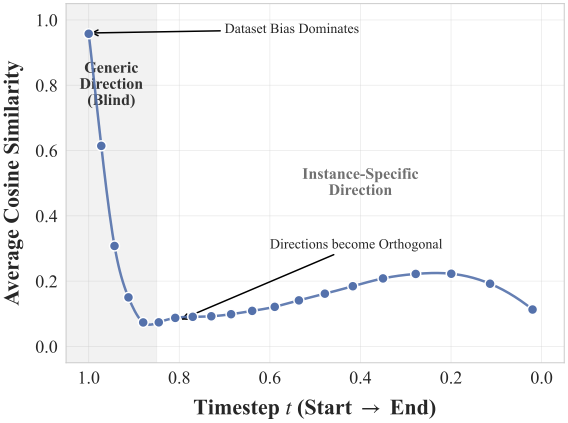
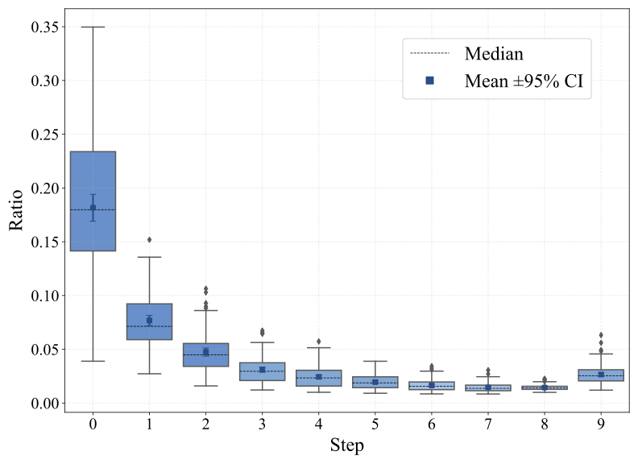
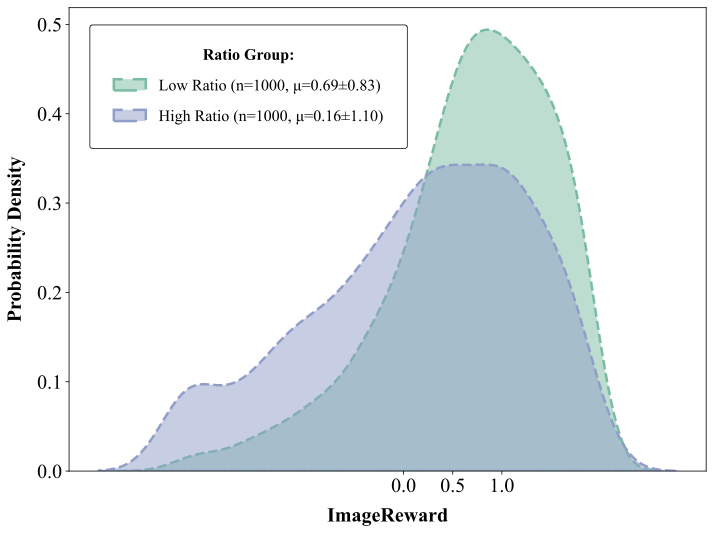
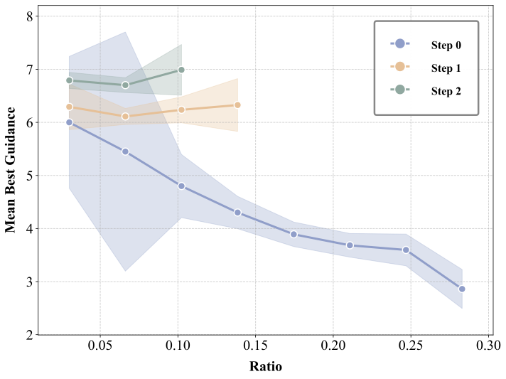
Results
MAMBO-G is evaluated on text-to-image models, text-to-video models, high-resolution generation, scheduler variants, and combinations with other guidance methods.
Text-to-image
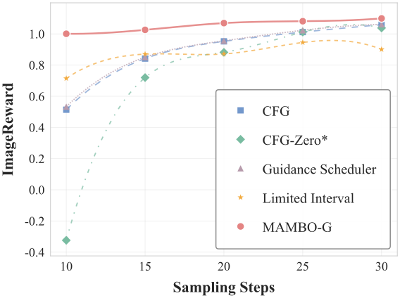
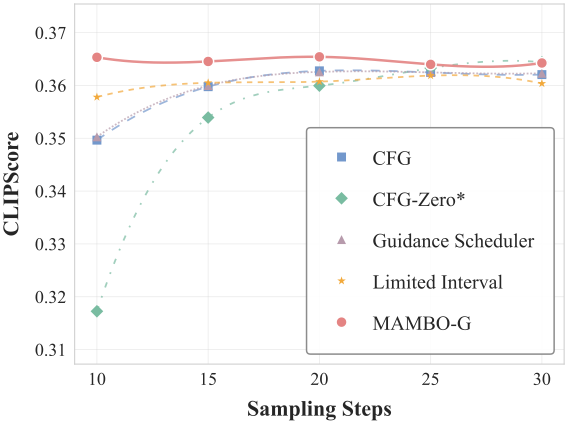
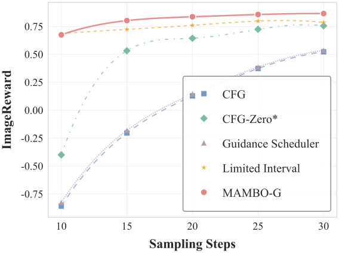
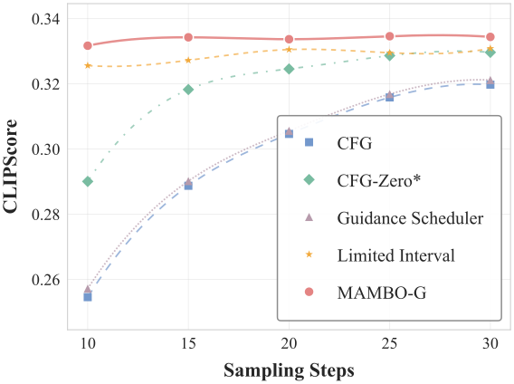
Text-to-video
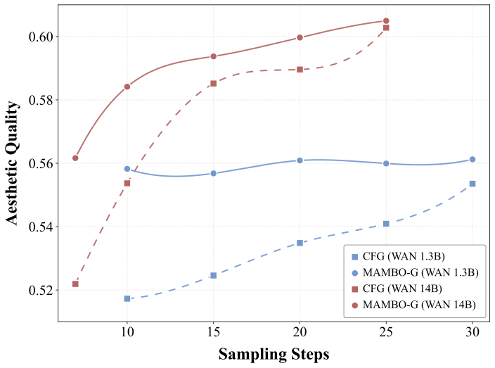
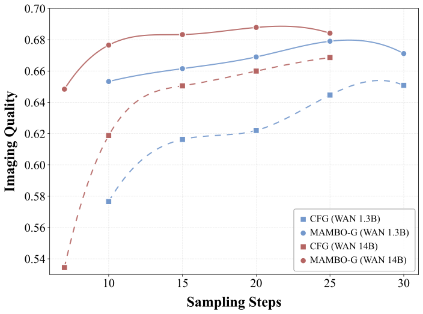
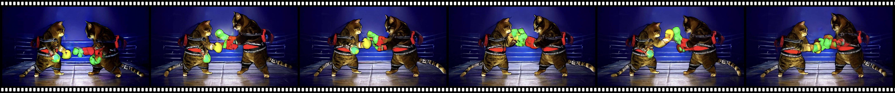
Resolution stress test
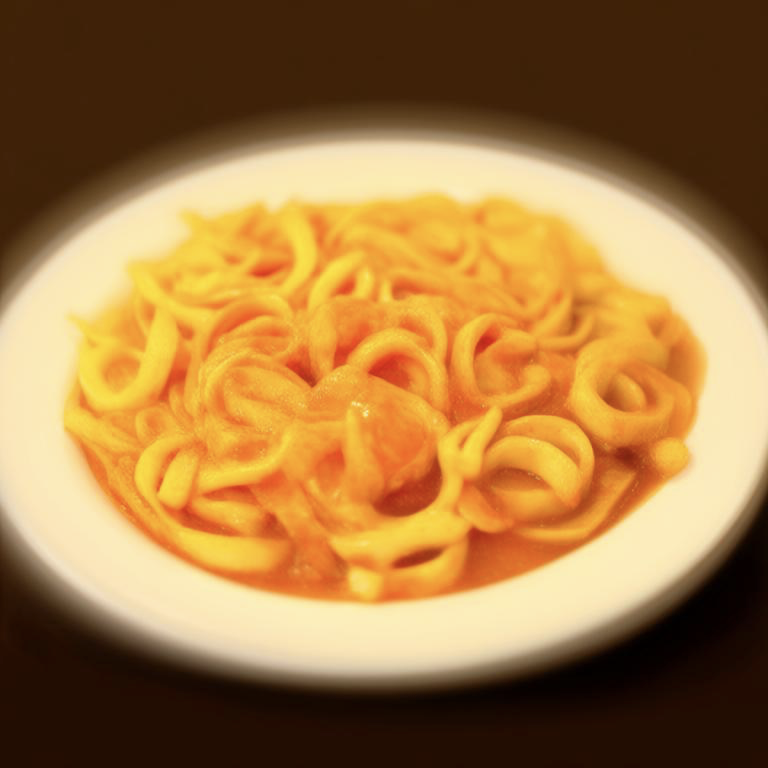
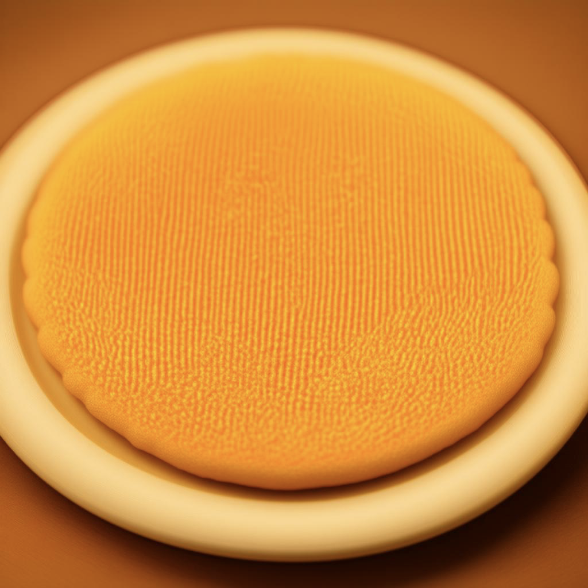
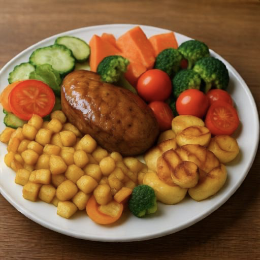
| Resolution | CFG ImageReward | MAMBO-G ImageReward |
|---|---|---|
| 256 x 256 | 0.53 | 0.83 |
| 512 x 512 | 0.63 | 1.10 |
| 768 x 768 | 0.30 | 1.07 |
| 1024 x 1024 | 0.20 | 1.02 |
Release
The method is intentionally small: it only needs the conditional and unconditional predictions already computed by CFG.
The paper notes that the implementation follows mainstream open-source standards and has been merged into the Hugging Face Diffusers workflow. The quickstart at the top of this page shows the guider swap.
View Diffusers PRMAMBO-G stacks with Guidance Rescale and Adaptive Projection Guidance because it controls scale rather than redesigning the guidance direction.
| Baseline CFG | 0.12 |
| Rescale | 0.73 |
| Rescale + MAMBO-G | 1.12 |
| APG | 0.85 |
| APG + MAMBO-G | 0.96 |
Ablations show that the exponential mapping works best among tested schedules, while performance stays stable over broad hyperparameter regions.
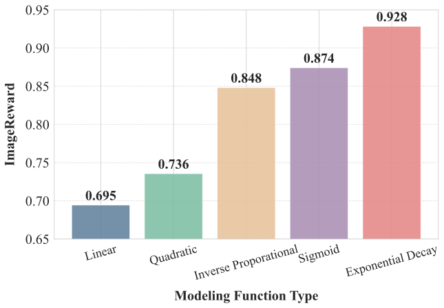
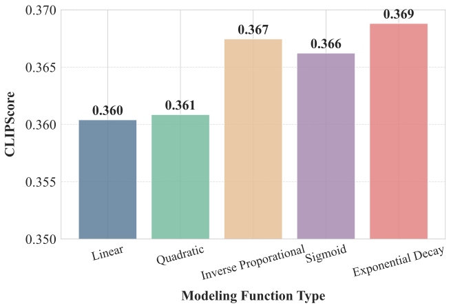
Citation
@misc{zhu2026mambog,
title = {MAMBO-G: Magnitude-Aware Mitigation for Boosted Guidance},
author = {Shangwen Zhu and Qianyu Peng and Zhilei Shu and Yuting Hu and Zhantao Yang and Han Zhang and Zhao Pu and Andy Zheng and Xinyu Cui and Jian Zhao and Ruili Feng and Fan Cheng},
year = {2026},
note = {Preprint}
}